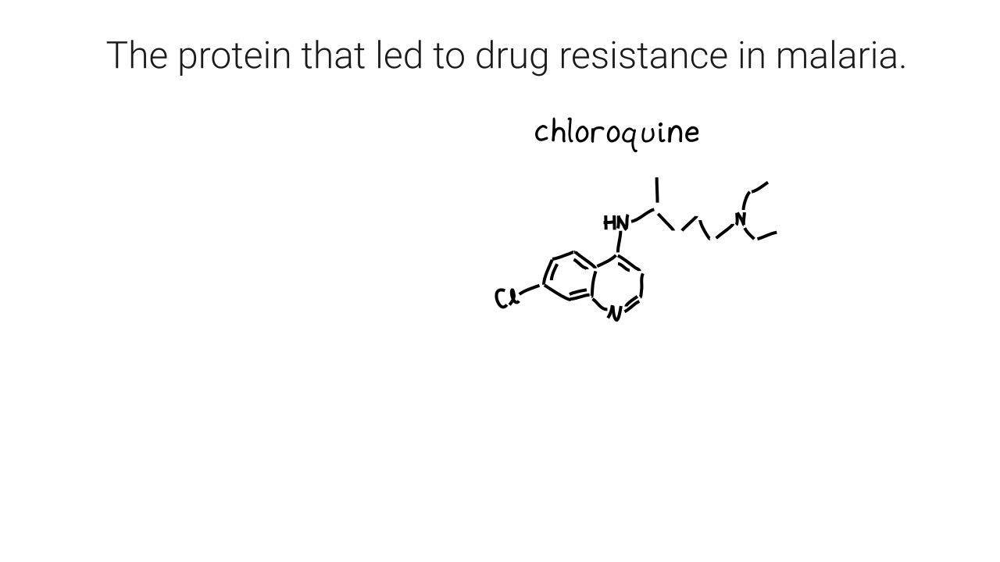
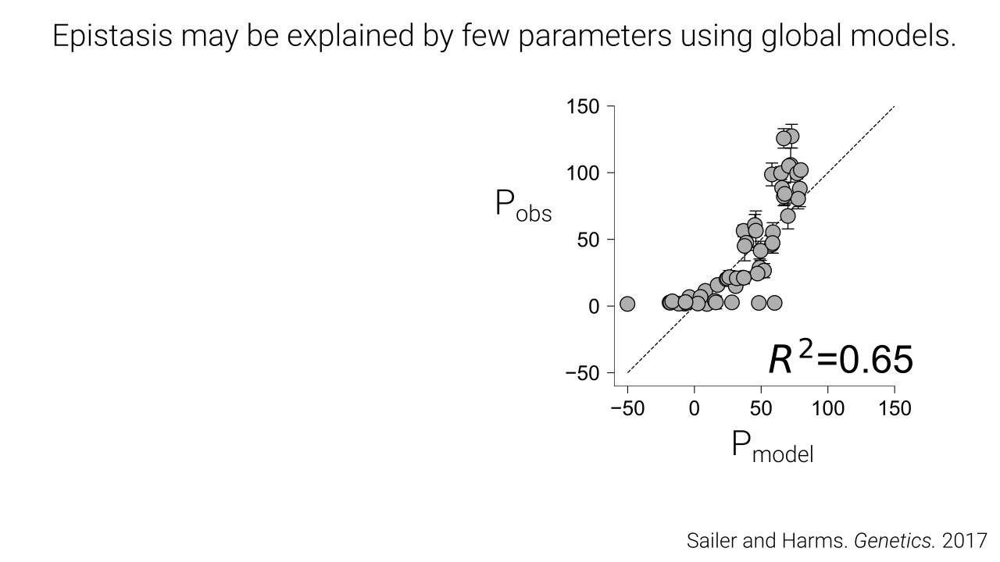
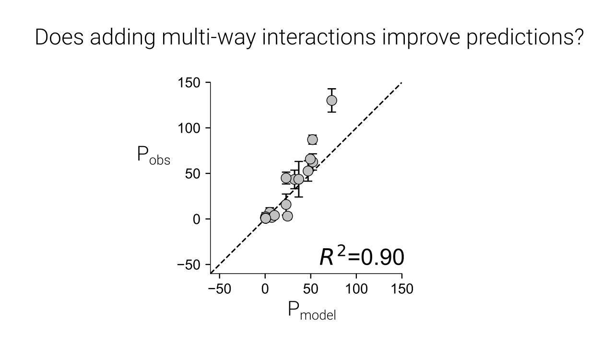
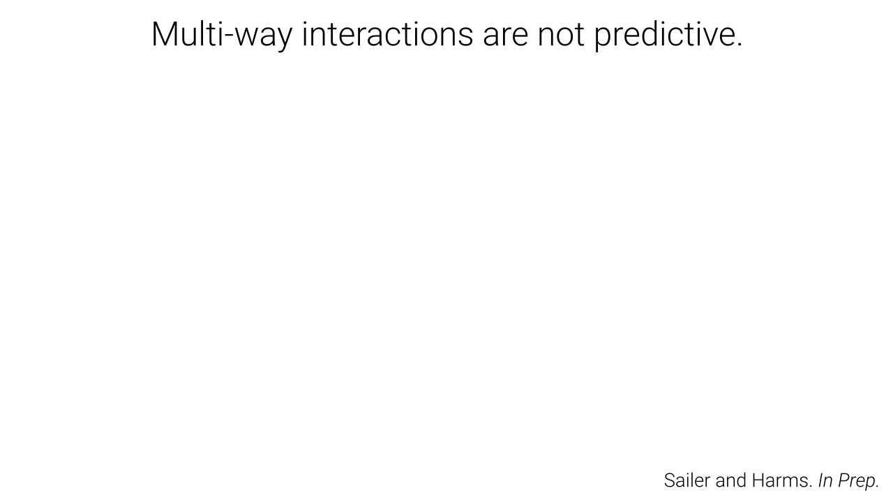
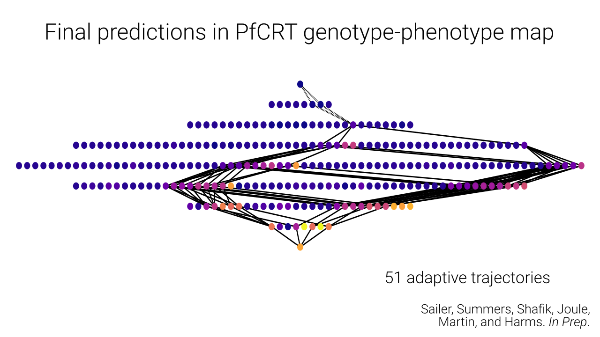
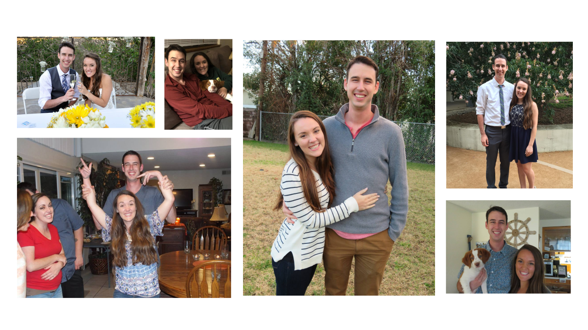
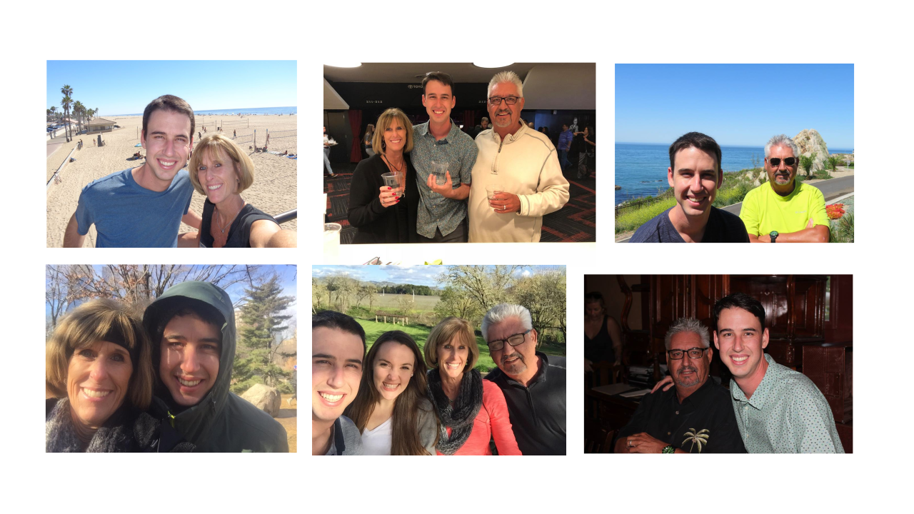

Proteins evolved.
(Show a diverse set of proteins with cool functions)
This is amazing.
Protein evolution depends on the genotype-phenotype map.


To understand how a protein evolved, we must study its genotype-phenotype map.
Why is one mutation taken over another?
In what order did mutations accumulate?
What are the physical/chemical determinants of a protein's evolutionary outcome.





How did drug resistance evolve in malaria.
- Predict the genotype-phenotype map
- Compare to experimental predictions
- Infer evolutionary trajectories to CQ reistances.








High-order epistasis arises because mutations can affect multiple states in a system simultaneously
Any system that involves a collection of states will likely exhibit high-order epistasis.
Can we observe this experimentally?
(Anneliese's experiment)




Conclusions
- Only a few trajectories to drug resistance are possible.
- Many neutral steps were required.
- This main explain why drug resistance took so long to evolve.
More conclusions
- Developed a general model for predicting sparsely sampled genotype-phenotype maps.
The software is fast, high-quality, free, open source, and includes documentation.
Future directions
- Better models for decomposing global epistasis (ensemble model)
- Add Jake's citation



Questions?